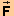

The following Activities are for the 'Force and Energy in Circular Motion' applet. Their purpose is to investigate the work-kinetic energy theorem in circular motion. Make sure you know how the applet functions by consulting Help and ShowMe under Applet Help on the applet's Help menu.
Activity 1. The purpose of Activity 1 is to examine the case of uniform circular motion of a particle.
RESET the applet.
Display the velocity vector of the mass point and the net force acting on the mass point by selecting "velocity at particle" and "force" in the Vector Panel. Display the Data box.
PLAY the motion, and observe that the force vector keeps pointing towards the center of the circle and is always at right angles to the velocity vector.
Also observe that the red kinetic energy bar remains constant in height and, that the value of KE(t) in the Data box remains constant, and that the value of the work W done on the particle stays 0.
Activity 2. Explain the observations from Exercise 1 in terms of the work-kinetic energy theorem. In particular, explain why the work done on the particle is 0 when the net force acting on the particle is not zero.
Answer. The net work W done on the particle is 0 because the net force  is at right angles to the velocity at any instant, and therefore at right angles to the particle's infinitesimal displacement d during an infinitesimal time interval surrounding that instant. Remember that the infinitesimal amount of net work dW during such an infinitesimal time interval is given by the scalar product
dW = d = F|d| cos q.(1)
If the angle q between the net force and the displacement is 90o as in the present case, dW = 0 because cos 90o = 0. If for each infinitesimal displacement the work dW is zero, the sum W of all the infinitesimal amounts of work for a finite displacement is zero as well.
According to the work-kinetic energy theorem, the net work W done on the particle is equal to the change in the particle's kinetic energy. If W = 0, the change in kinetic energy of the particle is zero as well, which means that the particle's kinetic energy remains constant.
Activity 3. The purpose of this Activity is to examine the case of non-uniform circular motion.
(a) REWIND the applet. Set the dv/dt-slider to -0.05 m/s2. Make sure the v(0)-slider is still at 0.20 m/s, that the Data box is displayed, as well as the velocity and force vectors. Write down the value of the particle's kinetic energy at t = 0.
STEP the motion to time t = 0.90 s. Observe that the work done on the particle takes on increasingly negative values at each step and that the kinetic energy values are correspondingly decreasing. The red kinetic energy bar is shrinking in height.
Write down the values of the net work W done on the particle and the particle's kinetic energy KE at t = 0.90 s.
Verify that these values together with the intial value of the kinetic energy at t = 0 satisfy the work-kinetic energy theorem,
W = DKE .(2)
(b) PLAY the motion past time t = 0.90 s. Wait until the kinetic energy is reduced to zero and the mass point's motion is momentarily halted. Subsequently the mass point moves in the opposite direction with increasing kinetic energy. The values of W are becoming less negative, reach 0 at the starting point of the motion, and become positive beyond that. Pause the motion at a moment when W is positive.
Again, write down the values of W and KE for that moment as listed in the Data box, and verify that they satisfy Eq.(2) when combined with the value for the initial kinetic energy at t = 0.
Verify also that the work done from t = 0.90 s until the moment you stopped the motion is equal to the change in the particle's kinetic energy during that time interval.
(c) Repeat the observations and calculations done in Parts (a) or (b) for a different set of initial conditions and parameter settings of the applet.
Activity 4 (Challenge Activity). RESET the applet. In addition to the net force and velocity vectors, display the component vectors of the net force. Set dv/dt to a non-zero value. Write down all initial settings including the value of the initial kinetic energy.
(a) PLAY the motion, and observe that the tangential component of the net force stays constant in magnitude. PAUSE the motion at some point, and check that its magnitude Ftan, which is displayed in the Data box, is equal to m|dv/dt|.
(b) Using only the values of the initial settings noted down earlier and the value of the time t at the moment you paused the motion, calculate the values of the net work W and of the kinetic energy KE of the particle at the moment you paused the motion. Verify that the work-kinetic energy theorem is satisfied.